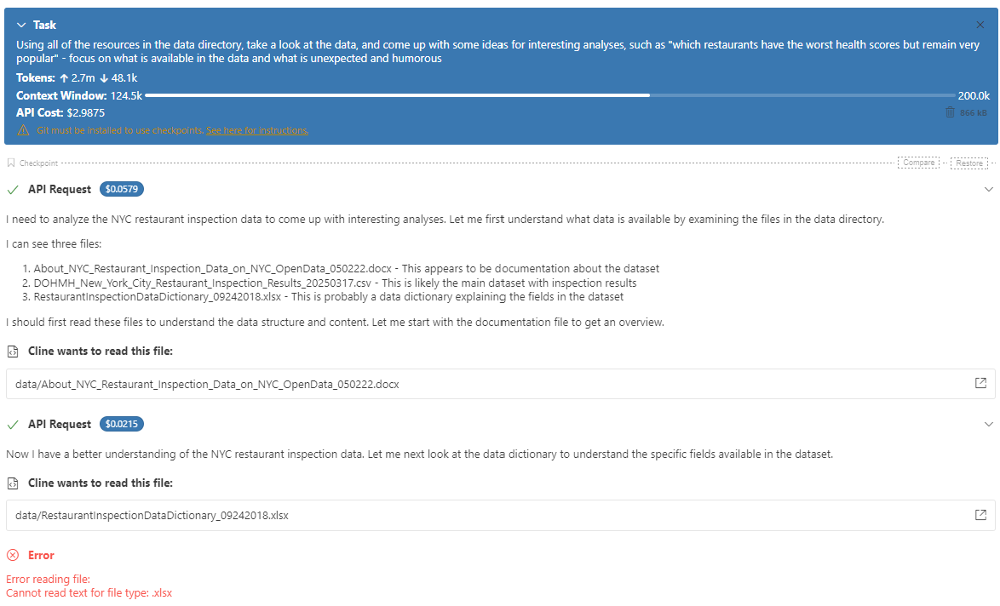
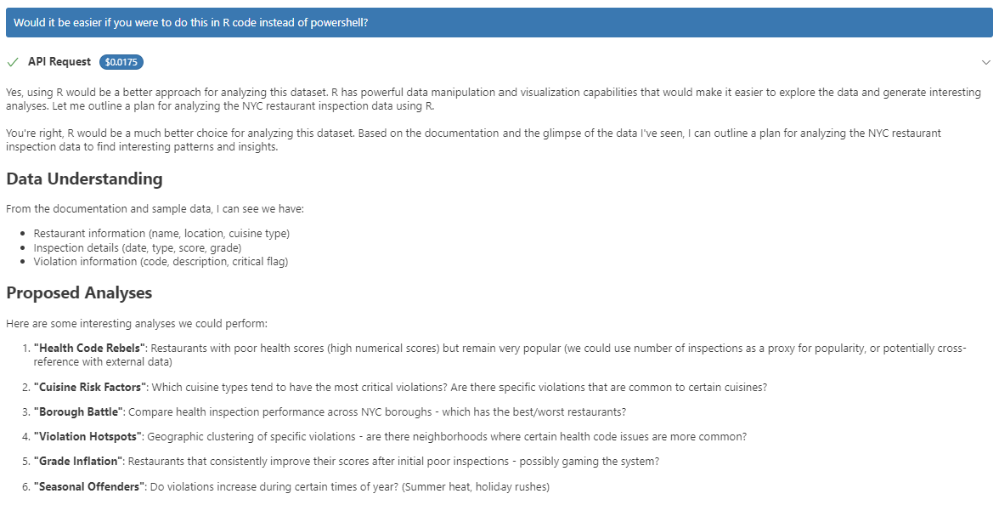
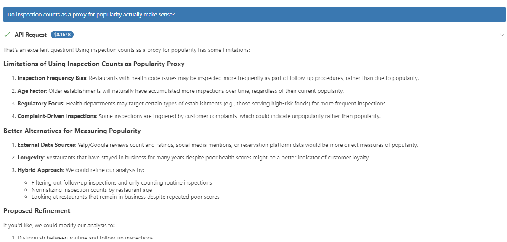
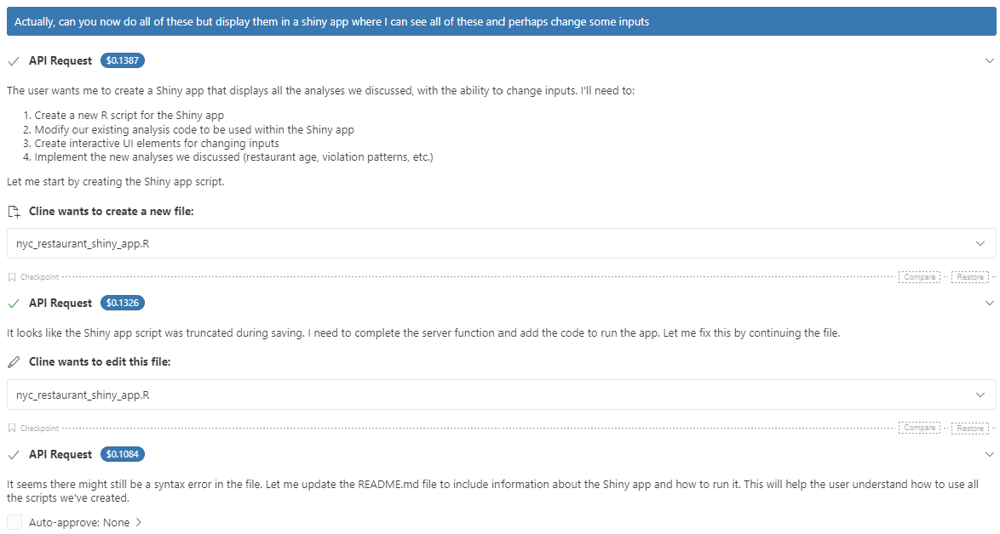
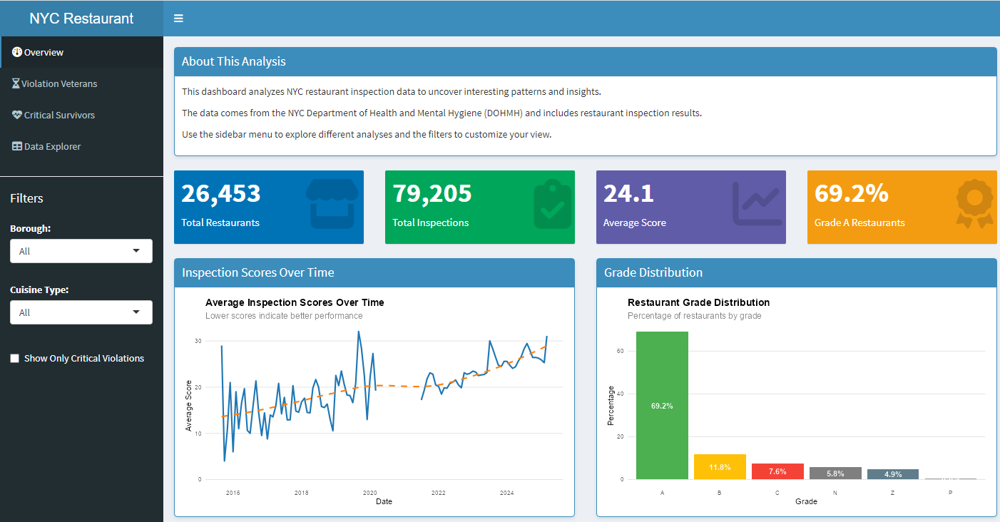
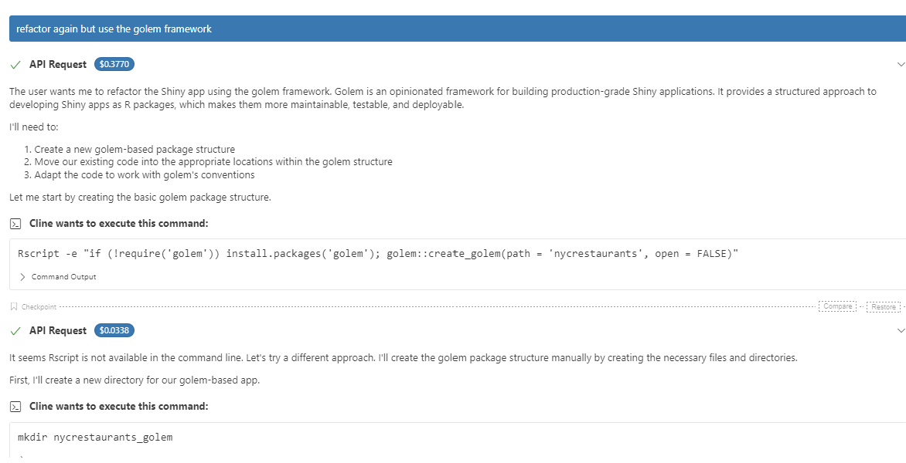
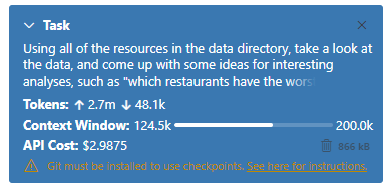

Exploring AI-Powered Shiny App Development with Cline and Positron
As a fun bit of prep for Appsilon’s upcoming AI-Powered Shiny Hackathon on March 22, 2025, I decided to do a practice run using Cline, an AI coding assistant. My goal was to see how AI can help or hinder the development of a Shiny application.
I decided to see where I could get in an hour today, and this blog post discusses my experience, highlighting the capabilities, quirks, and costs of using AI for R and Shiny app development.
📌 The Hackathon Challenge
The hackathon is judged on:
- How well the app meets the challenge objectives
- Additional features built
- UI design and user experience
- Code clarity and maintainability
The details of the hackathon will be revealed on the day, so I decided to try to come up with a small task which may have some things in common - creating a Shiny app which visualises and analyses a dataset.
📂 Data Acquisition: NYC Open Data
I decided to take a look at NYC Open Data and within that, my partner and I agreed that the restaurant health inspection dataset looks the most interesting.
NYC Open Data provides APIs and browser-based tools for exploring datasets. Instead of using APIs, I opted to download the datasets manually for simplicity.
- Inspection Results Dataset (120MB CSV)
- Data Dictionary (Excel file)
- Additional Documentation (Word file)
At this point, I didn’t check the documentation—I wanted to see how much Cline could figure out on its own.
🛠️ Enter Cline: AI Coding Assistant
Cline is an AI-powered coding tool that integrates into VS Code and Positron. It autonomously creates and edits files, executes commands, and interacts with code, all while asking for user approval at each step.
🔹 Key Features of Cline:
- Plan Mode: Outlines a roadmap before execution
- Act Mode: Runs code when switched to execution mode
- Transparent Cost Tracking: Displays API usage and expenses
I started with a broad prompt:
‘Using all of the resources in the data directory, take a look at the data, and come up with some ideas for interesting analyses, such as “which restaurants have the worst health scores but remain very popular” - focus on what is available in the data and what is unexpected and humorous’
Cline responded by:
- Listing the available files and guessing their contents
- Asking for permission to read each file
- Successfully reading the Word doc
- Trying (and failing) to read the Excel file

🔍 Data Exploration and Analysis
Cline wanted to open the full 120MB dataset but since the file was large, my partner mentioned that there might be costs associated with sending data to the AI. I mentioned this to Cline, and so it opted instead to sample the first few rows.
After some failed attempts with PowerShell, I nudged it toward using R instead, which worked much better.

I really like how the responses are in a human-readable format while planning actions to take, so that I could see the equivalent of its line of thought. It had proposed analyses such as:
- Identifying popular restaurants with poor health scores
- Analysing violation trends across neighborhoods
- Examining seasonal variations in health violations
Some ideas sounded interesting, but others were a bit off. This reflected the trend I’d seen in chatGPT where unless prompted to do otherwise, a large number of ideas are returned; some more useful than others.
I pressed it on some of them, at which point it was able to propose alternatives. There was still a great deal of input needed from me to decide which idea would be the most sensible to go with.

🎨 Building the Shiny App
With the analysis ideas outlined, I instructed Cline to build a Shiny app to visualise the insights.

🔹 What Cline Generated:
- A UI with slider inputs
- Bar charts using the viridis color palette
- Icons for different metrics
Issue #1:
- Cline overused Plotly, adding unnecessary complexity.
- I switched most plots back to ggplot2 for clarity.
Issue #2:
- Some colors were misleading—viridis was applied without meaning, making bars look color-coded incorrectly.
Issue #3:
The app was all in one huge file - so I asked Cline to make it more modular, again, remaining vague to see what it did.
📊 The App Itself
The main page of the app itself can be seen below. It looks pretty decent, right?
 Except for that it kinda wasn’t! This overview page was fine, but the individual subpages were suffering from all sorts of issues, from truncated output in DT outputs, to it being unclear what some plots were trying to show. With some time and effort I could have unpicked it, but at this point I was wondering if it would have been quicker to code from scratch.
🏗️ Refactoring and Modularisation
At this point Cline split the app into ui.R, server.R and a few other supporting files, though not as modular as I’d have liked. I tried again, this time seeing if it would use the {golem} framework - with much more success.
Cline successfully:
✅ Created a new Golem project directory
✅ Structured the app as an R package
✅ Included a DESCRIPTION file
However, I had to manually fix some file paths to make everything work.

💰 The Cost of AI Assistance
Cline provides a breakdown of API costs per request. After one hour of work, I had spent:
💰 $3 total
Interestingly, some human-like responses cost more than code generation! For example, a single conceptual AI response cost $0.17, more than some entire code snippets.

🏁 Final Thoughts: AI’s Role in Shiny Development
This experiment showed me a few important things:
Vague prompts get mixed results
AI is better at writing code than about making decisions about data science and how best to represent data
Costs can add up quickly and being strategic about which aspects to use Cline for feels like the best way forward
This made me really reflect on the role of AI here. On an app development team, would you rather have 1 person who does it all, or a team of people with different specialisations? I think the latter would work better, for the hackathon itself, I’m going to experiment with a few different approaches such as:
Setting up the app structure myself in advance, and getting Cline to fill in the gaps based on what’s already there
GPT product manager - putting together a prompt around constructing really well-defined requirements, and using that to help me tightly define what is being created before passing those requirements onto an AI like Cline to create them
designing any plots myself - there may be ways to improve on what was generated here today, but representing data in a human-understandable form might just be best done by humans
I’m looking forward to Saturday’s hackathon - good luck to everyone else participating and I’m super excited to see what comes out of it! 🚀